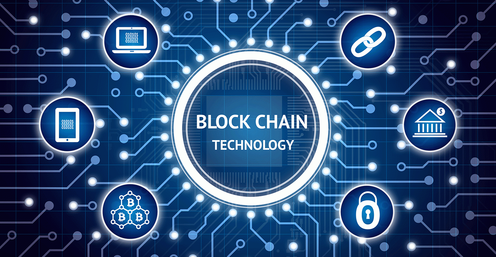

Blockchain
- Co to blockchain?
- Web3
- Bit Hotel (BTH)
- Pulse Prediction Markets (PULSE)
- RMRK (RMRK)
- Secret Network (SCRT)
- Chainlink
Co to Blockchain?
Blockchain, inaczej łańcuch bloków, jest to technologia, która służy do przechowywania oraz przesyłania
informacji o transakcjach zawartych w Internecie. Informacje te zostają ułożone w postaci następujących
po sobie bloków danych. Jeden blok zawiera informacje o określonej liczbie transakcji, następnie po jego
nasyceniu tworzy się kolejny blok danych, a za nim kolejny i następny, tworząc pewien rodzaj łańcucha.
Mogą być przesyłane w nim informacje o różnych rodzajach transakcji, np. handlowych, kupnie lub sprzedaży
walut, także kryptowalut.
Web3
Web3 to pomysł na nową iterację World Wide Web opartą na technologii blockchain, która obejmuje takie pojęcia,
jak decentralizacja i ekonomia oparta na tokenach. Programiści w Web3 wdrażają projekty w zdecentralizowanych
sieciach typu blockchain, których przykładem może być Ethereum. Nazywana kiedyś Bitcoinem 2.0, wykracza daleko
poza potoczne, często spekulacyjne, rozumienie kryptowaluty. Takie sieci, choć posiadają własną kryptowalutę,
są przede wszystkim otwartoźródłowe i zdecentralizowane, a także bazują na technologii blockchain i bezpośrednim
przesyłaniu danych pomiędzy wieloma serwerami. Pozwala to na budowanie rozproszonej sieci aplikacji (DApps) oraz
wytwarzanie dowolnej liczby tokenów.
Bit Hotel (BTH)
Bit Hotel (BTH) to nadchodząca gra blockchain typu play-to-earn o charakterze społecznym. Projekt znajduje
się w sekcji metaverse gier o wysokim potencjale i niesie obietnicę rywalizacji z innymi popularnymi grami
blockchain, takimi jak Axie Infinity. Natywny token BTH jest główną walutą w grze i może być również używany
do zarządzania. W momencie pisania tego tekstu, BTH był handlowany za 0,1808 USD.
Pulse Prediction Markets (PULSE)
Pulse Prediction Markets (PULSE) jest innowacyjnym DApp zbudowanym na ekosystemie NEAR. Aplikacja ma na
celu wykorzystanie mocy Flux Oracle do rozwiązywania typowych problemów rynku predykcyjnego oraz
zapewnienia dostępnych i wydajnych platform dla użytkowników. Projekt jest prowadzony przez handlowców
za pomocą Pulse DAO, gdzie natywny token zarządzania znany jako PULSE jest używany do wpływania na decyzje
administracyjne. Jako jeden z głównych projektów NEAR, Pulse jest wciąż w fazie początkowej i oferuje
znakomity potencjał przyszłego wzrostu. W momencie pisania tego tekstu kurs Pulse wynosił 0,1589 USD,
co oznacza wzrost o prawie 25% w ciągu 24 godzin.
RMRK (RMRK)
RMRK to projekt ekosystemu Kusama (oraz Polkadot), który tworzy coś, co nie bez powodu nazywane jest NFT
2.0. Dzięki temu jak działa pozwala tworzyć zaawansowane rozwiązania w zakresie tokenów niezamiennych,
które już dziś z powodzeniem są wykorzystywane przez kilka projektów. Projekt zapowiedział też swoje
metawersum, gdzie oczywiście natywną walutą będzie RMRK. Projekt wprowadza koncepcję lego NFT - proste,
prymitywne komponenty standardu, które po połączeniu mogą stworzyć nieskończenie złożony projekt.
Dlaczego tokeny niezamienne od RMRK są wyjątkowe? Ponieważ NFT mogą posiadać… inne NFT. Jest to koncept
bardzo przydatny przy tworzeniu wielu rozwiązań, głównie w obrębie jednej z głównych narracji 2022 roku,
czyli metawersum i gier.
Secret Network (SCRT)
Nazwa mówi sama za siebie. Secret Network pozwala tworzyć aplikacje i NFT, które są całkowicie prywatne,
a także pozwala na anonimowe transfery i wymiany. Potencjał takich rozwiązań dostrzegł… Quentin Tarantino,
a świetnym przykładem jest niedawno uruchomiony rynek NFT Stashh. Co więcej, SCRT przy tym wszystkim, na
co pozwala nie jest private coinem więc (teoretycznie) nie grozi mu banicja z dużych giełd. Secret
Network planuje ogromną ekspansję w roku 2022 roku. Mówi się o co najmniej 100 projektach budujących
w sieci, a wspomina nawet o 1000, które mają pojawić się w 2022 roku. Dodatkowo niedawna implementacja
IBC wprowadziła Secret w wielołańcuchowy świat Cosmos.
Chainlink
Jeden z najważniejszych projektów rynku kryptowalut, kluczowy dla wielu aplikacji (nie tylko DeFi),
zabezpieczający dziesiątki miliardów dolarów wartości i łączący wiele znanych, ogromnych firm ze świata
rzeczywistego z blockchainem i smart kontraktami. Rozwój technologii (opisany w Chainlink 2.0), ekosystemu
i partnerstw w świecie rzeczywistym Chianlink w 2021 był ogromny, jednak cenowo LINK nie zrobił niczego
wyjątkowego, wręcz przeciwnie. Jeśli chodzi o to gdzie teraz znajduje się token LINK, to jest mniej więcej
tam gdzie… na początku 2021 roku. Chainlink zawiódł wiele osób w mijającym roku brakiem eksplozji ceny,
ale fundamentalnie jest to absolutnie kluczowy gracz na rynku DeFi i NFT. Jednym z najważniejszych
wydarzeń nadchodzącego roku może być wprowadzenie oczekiwanego przez wszystkich, rewolucyjnego stakingu LINK.
